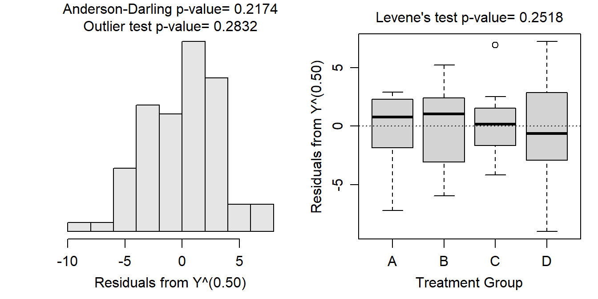
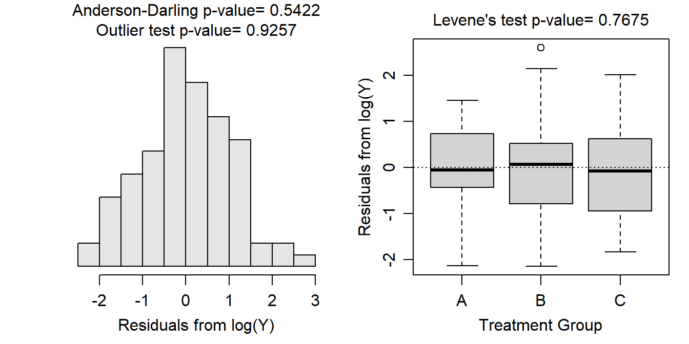
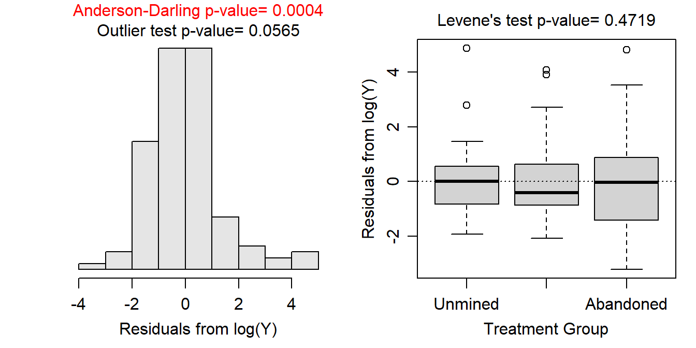
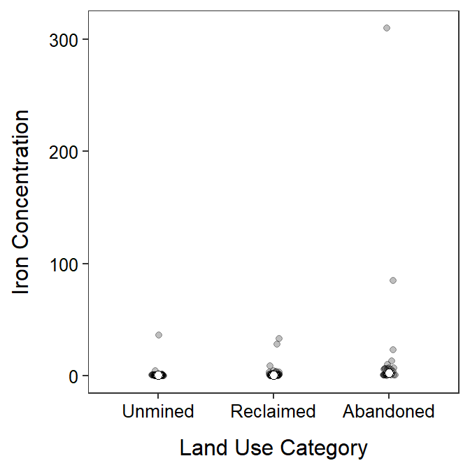
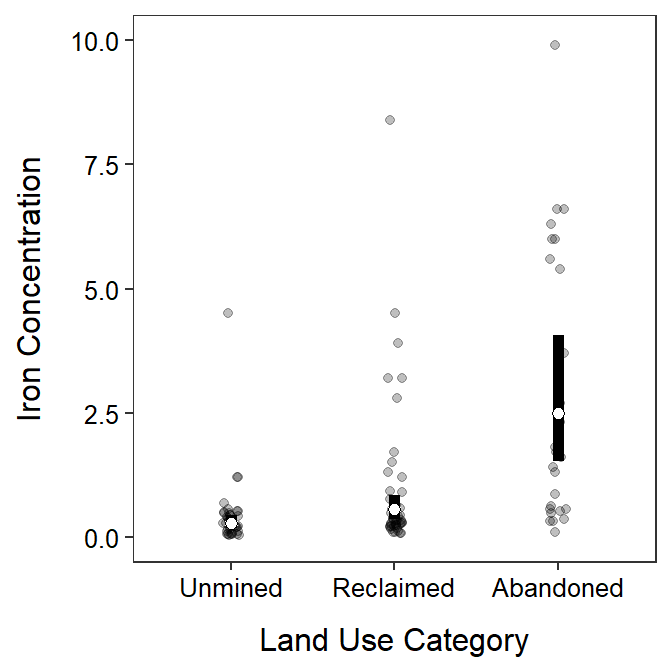

> df1 <- read.csv("http://derekogle.com/NCMTH207/modules/ce/data/ANOVA1Assumptions1.csv")
> lm1 <- lm(measure~group,data=df1)
> assumptionCheck(lm1,lambday=0.5)
> df1$sqrtmeas <- sqrt(df1$measure)
> lm1t <- lm(sqrtmeas~group,data=df1)
> anova(lm1t)Analysis of Variance Table
Response: sqrtmeas
Df Sum Sq Mean Sq F value Pr(>F)
group 3 3610.9 1203.62 115.82 < 2.2e-16
Residuals 76 789.8 10.39 > mc1t <- emmeans(lm1t,specs=pairwise~group,tran="sqrt")Note: Use 'contrast(regrid(object), ...)' to obtain contrasts of back-transformed estimates> ( mcsum1t <- summary(mc1t,infer=TRUE) )$emmeans
group emmean SE df lower.CL upper.CL t.ratio p.value
A 9.92 0.721 76 8.48 11.4 13.761 <.0001
B 19.04 0.721 76 17.60 20.5 26.408 <.0001
C 28.90 0.721 76 27.46 30.3 40.090 <.0001
D 19.96 0.721 76 18.52 21.4 27.690 <.0001
Results are given on the sqrt (not the response) scale.
Confidence level used: 0.95
$contrasts
contrast estimate SE df lower.CL upper.CL t.ratio p.value
A - B -9.117 1.02 76 -11.79 -6.44 -8.943 <.0001
A - C -18.979 1.02 76 -21.66 -16.30 -18.618 <.0001
A - D -10.041 1.02 76 -12.72 -7.36 -9.849 <.0001
B - C -9.863 1.02 76 -12.54 -7.18 -9.675 <.0001
B - D -0.924 1.02 76 -3.60 1.75 -0.907 0.8013
C - D 8.939 1.02 76 6.26 11.62 8.768 <.0001
Note: contrasts are still on the sqrt scale
Confidence level used: 0.95
Conf-level adjustment: tukey method for comparing a family of 4 estimates
P value adjustment: tukey method for comparing a family of 4 estimates > ( mcsum1bt <- summary(mc1t,infer=TRUE,type="response") )$emmeans
group response SE df lower.CL upper.CL t.ratio p.value
A 98.4 14.3 76 72 129 13.761 <.0001
B 362.4 27.4 76 310 419 26.408 <.0001
C 835.1 41.7 76 754 920 40.090 <.0001
D 398.4 28.8 76 343 458 27.690 <.0001
Confidence level used: 0.95
Intervals are back-transformed from the sqrt scale
Tests are performed on the sqrt scale
$contrasts
contrast estimate SE df lower.CL upper.CL t.ratio p.value
A - B -9.117 1.02 76 -11.79 -6.44 -8.943 <.0001
A - C -18.979 1.02 76 -21.66 -16.30 -18.618 <.0001
A - D -10.041 1.02 76 -12.72 -7.36 -9.849 <.0001
B - C -9.863 1.02 76 -12.54 -7.18 -9.675 <.0001
B - D -0.924 1.02 76 -3.60 1.75 -0.907 0.8013
C - D 8.939 1.02 76 6.26 11.62 8.768 <.0001
Note: contrasts are still on the sqrt scale
Confidence level used: 0.95
Conf-level adjustment: tukey method for comparing a family of 4 estimates
P value adjustment: tukey method for comparing a family of 4 estimates
> df2 <- read.csv("http://derekogle.com/NCMTH207/modules/ce/data/ANOVA1Assumptions2.csv")
> lm2 <- lm(measure~group,data=df2)
> assumptionCheck(lm2,lambday=0)
> df2$logmeas <- log(df2$measure)
> lm2t <- lm(logmeas~group,data=df2)
> anova(lm2t)Analysis of Variance Table
Response: logmeas
Df Sum Sq Mean Sq F value Pr(>F)
group 2 46.417 23.2085 21.484 2.613e-08
Residuals 87 93.983 1.0803 > mc2t <- emmeans(lm2t,specs=pairwise~group,tran="log")
> ( mcsum2t <- summary(mc2t,infer=TRUE) )$emmeans
group emmean SE df lower.CL upper.CL t.ratio p.value
A 2.18 0.19 87 1.81 2.56 11.504 <.0001
B 1.41 0.19 87 1.03 1.79 7.422 <.0001
C 3.16 0.19 87 2.79 3.54 16.671 <.0001
Results are given on the log (not the response) scale.
Confidence level used: 0.95
$contrasts
contrast estimate SE df lower.CL upper.CL t.ratio p.value
A - B 0.775 0.268 87 0.135 1.415 2.886 0.0135
A - C -0.980 0.268 87 -1.620 -0.341 -3.654 0.0013
B - C -1.755 0.268 87 -2.395 -1.115 -6.540 <.0001
Results are given on the log (not the response) scale.
Confidence level used: 0.95
Conf-level adjustment: tukey method for comparing a family of 3 estimates
P value adjustment: tukey method for comparing a family of 3 estimates > ( mcsum2bt <- summary(mc2t,infer=TRUE,type="response") )$emmeans
group response SE df lower.CL upper.CL t.ratio p.value
A 8.87 1.684 87 6.08 12.94 11.504 <.0001
B 4.09 0.776 87 2.80 5.96 7.422 <.0001
C 23.65 4.488 87 16.22 34.49 16.671 <.0001
Confidence level used: 0.95
Intervals are back-transformed from the log scale
Tests are performed on the log scale
$contrasts
contrast ratio SE df lower.CL upper.CL t.ratio p.value
A / B 2.170 0.5823 87 1.1442 4.114 2.886 0.0135
A / C 0.375 0.1007 87 0.1978 0.711 -3.654 0.0013
B / C 0.173 0.0464 87 0.0912 0.328 -6.540 <.0001
Confidence level used: 0.95
Conf-level adjustment: tukey method for comparing a family of 3 estimates
Intervals are back-transformed from the log scale
P value adjustment: tukey method for comparing a family of 3 estimates
Tests are performed on the log scale
> im <- read.csv("https://raw.githubusercontent.com/droglenc/NCData/master/AcidMineDrainage.csv")
> im$use <- factor(im$use,levels=c("Unmined","Reclaimed","Abandoned"))
> lm3 <- lm(FE~use,data=im)
> assumptionCheck(lm3,lambday=0)
> im$logFE <- log(im$FE)
> lm3t <- lm(logFE~use,data=im)
> anova(lm3t)Analysis of Variance Table
Response: logFE
Df Sum Sq Mean Sq F value Pr(>F)
use 2 90.091 45.045 21.743 9.35e-09
Residuals 117 242.392 2.072 > mc3t <- emmeans(lm3t,specs=pairwise~use,tran="log")
> ( mcsum3t <- summary(mc3t,infer=TRUE) )$emmeans
use emmean SE df lower.CL upper.CL t.ratio p.value
Unmined -1.286 0.233 117 -1.748 -0.823 -5.506 <.0001
Reclaimed -0.587 0.208 117 -0.998 -0.175 -2.825 0.0056
Abandoned 0.913 0.247 117 0.425 1.402 3.700 0.0003
Results are given on the log (not the response) scale.
Confidence level used: 0.95
$contrasts
contrast estimate SE df lower.CL upper.CL t.ratio p.value
Unmined - Reclaimed -0.699 0.313 117 -1.44 0.0432 -2.236 0.0694
Unmined - Abandoned -2.199 0.340 117 -3.01 -1.3923 -6.472 <.0001
Reclaimed - Abandoned -1.500 0.323 117 -2.27 -0.7343 -4.650 <.0001
Results are given on the log (not the response) scale.
Confidence level used: 0.95
Conf-level adjustment: tukey method for comparing a family of 3 estimates
P value adjustment: tukey method for comparing a family of 3 estimates > ( mcsum3bt <- summary(mc3t,infer=TRUE,type="response") )$emmeans
use response SE df lower.CL upper.CL t.ratio p.value
Unmined 0.276 0.0646 117 0.174 0.439 -5.506 <.0001
Reclaimed 0.556 0.1155 117 0.369 0.839 -2.825 0.0056
Abandoned 2.493 0.6153 117 1.529 4.064 3.700 0.0003
Confidence level used: 0.95
Intervals are back-transformed from the log scale
Tests are performed on the log scale
$contrasts
contrast ratio SE df lower.CL upper.CL t.ratio p.value
Unmined / Reclaimed 0.497 0.1554 117 0.2368 1.044 -2.236 0.0694
Unmined / Abandoned 0.111 0.0377 117 0.0495 0.248 -6.472 <.0001
Reclaimed / Abandoned 0.223 0.0720 117 0.1037 0.480 -4.650 <.0001
Confidence level used: 0.95
Conf-level adjustment: tukey method for comparing a family of 3 estimates
Intervals are back-transformed from the log scale
P value adjustment: tukey method for comparing a family of 3 estimates
Tests are performed on the log scale > p1 <- ggplot() +
geom_jitter(data=im,mapping=aes(x=use,y=FE),alpha=0.25,width=0.05) +
geom_errorbar(data=mcsum3bt$emmeans,
mapping=aes(x=use,y=response,ymin=lower.CL,ymax=upper.CL),
size=2,width=0) +
geom_point(data=mcsum3bt$emmeans,mapping=aes(x=use,y=response),
size=2,pch=21,fill="white") +
labs(y="Iron Concentration",x="Land Use Category") +
theme_NCStats()
> p1
> p1 +
coord_cartesian(ylim=c(0,10))